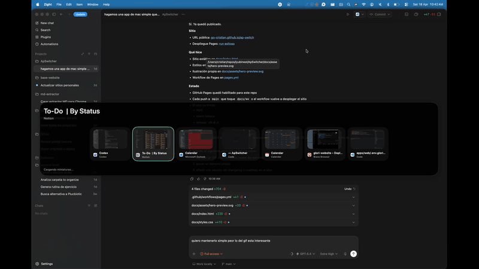

Why it is different
Windows are first-class targets.
If you have two browser windows and one terminal, you get three selectable items. The switcher stays tied to the actual workspace.
macOS utility
ApSwitcher uses Cmd+Tab to move across real windows instead of only switching apps.
It stays focused on one job: faster navigation between the windows you actually have open.
Cmd+Shift+Tab + arrow navigationDemo
A real capture of the app in use: centered overlay, per-window targets, and quick cycling between windows.

Why it is different
If you have two browser windows and one terminal, you get three selectable items. The switcher stays tied to the actual workspace.
Install
Download the DMG, move the app into Applications, approve Accessibility, and optionally enable Screen Recording for thumbnails.
Links